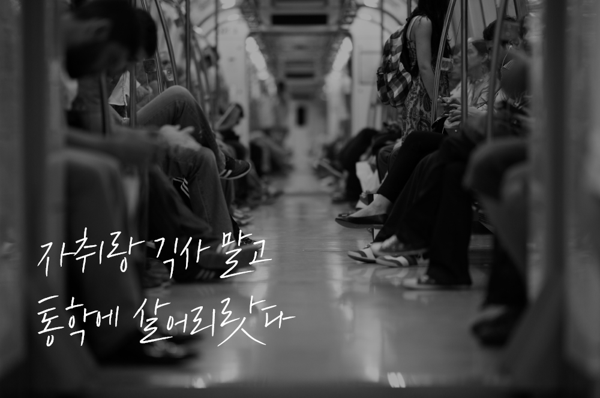
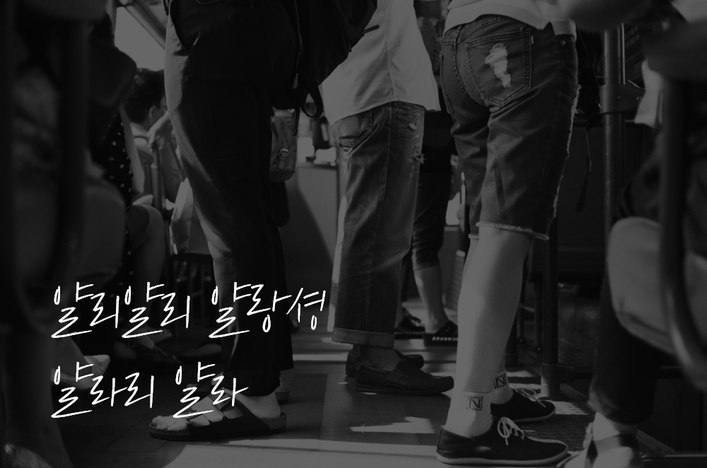
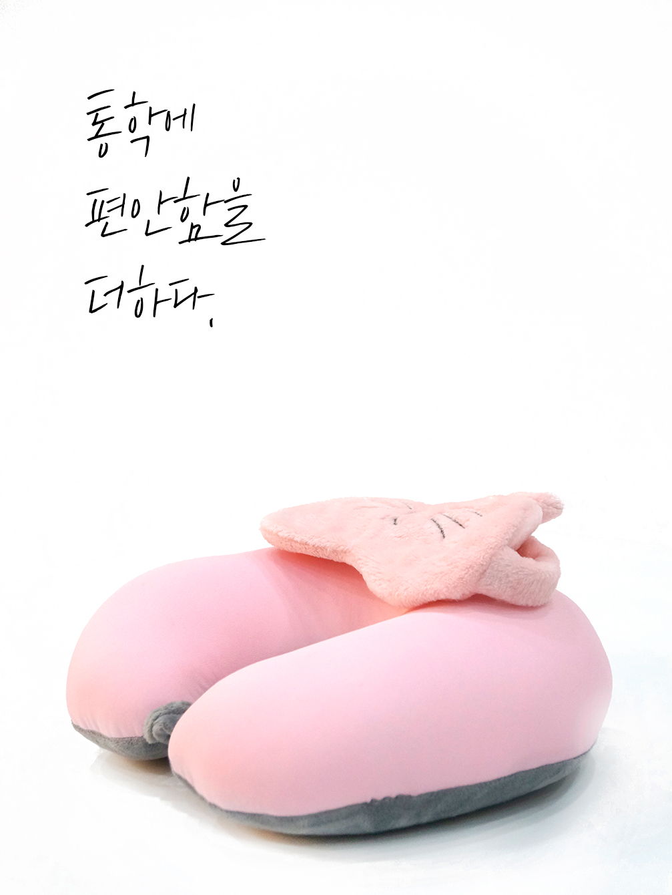
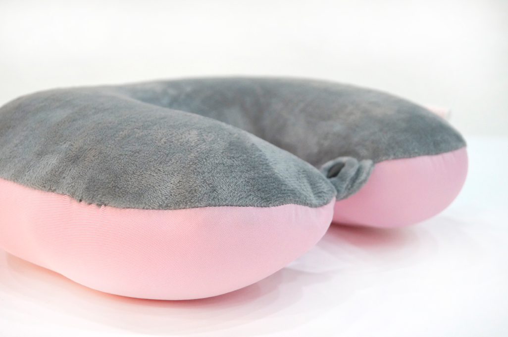
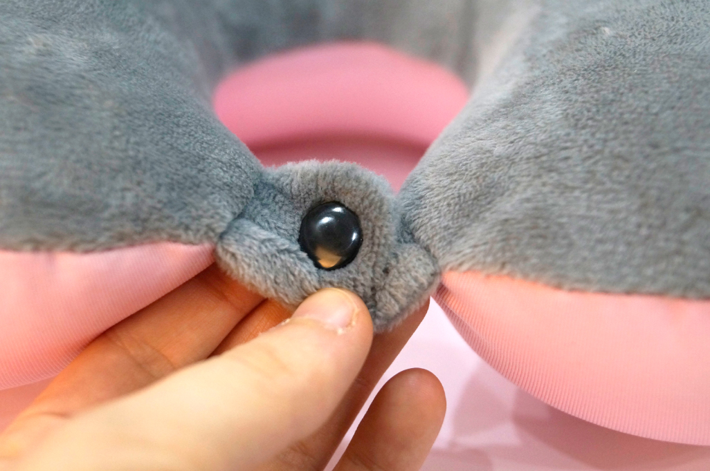
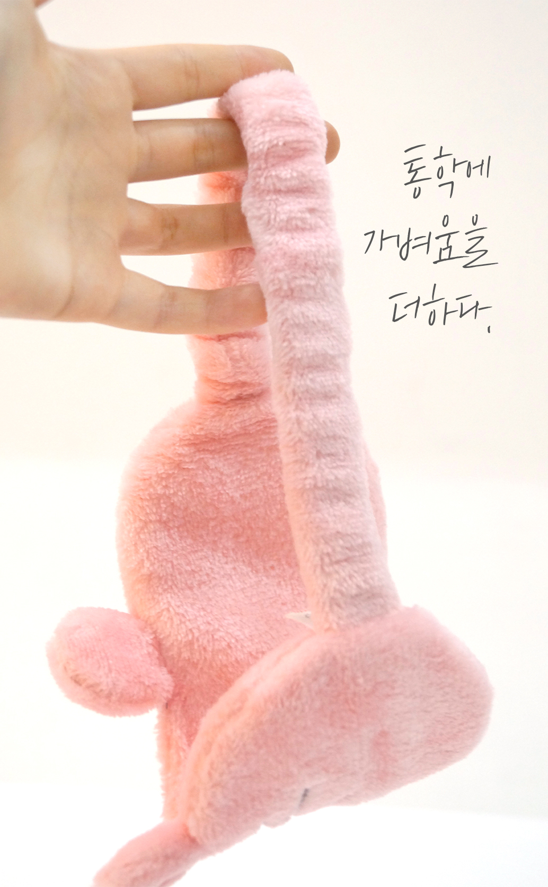
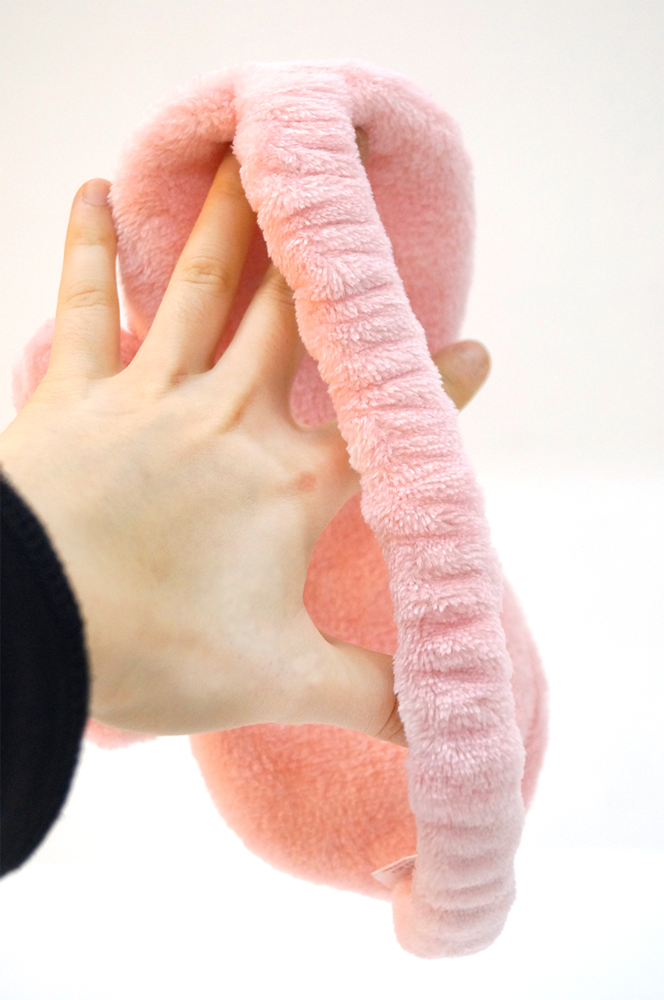
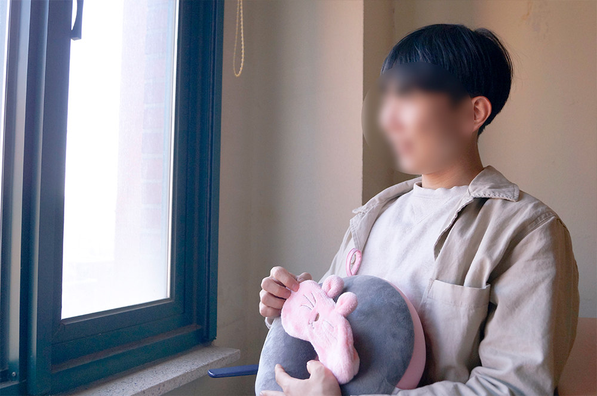

"피할 수 없음 누려라"
- 통학에 최적화 된 가벼움
- 편안한 숙면을 도와주는 부드러운 재질
- 바람을 넣었다 뺐다, 번거로움이 없는 편리함
- 귀엽고, 깔끔한 디자인

"매일 갖고 다니고 싶은 비주얼"
편리함, 편안함이 꼭 통학에서만 필요한 건 아니죠.
HK통학세트는 매일 들고 다녀도 부담없는 크기에요.
가방에 쏙 들어오는 사이즈에 무게도 173g여서 언제든지 간편하게 휴대할 수 있어요.
외모는 상큼하고 귀엽지만, 편안함에 통학의 감성을 지녔답니다.
  
 
상품구성
목배개
편하게 사용할 수 있는 단추가 달려있는 목배개,
무게가 정말 가볍고, 바람을 불어 넣는 번거로움이
없습니다!
안대
핑크색의 귀여운 디자인의 안대.
부드러운 소재뿐만 아니라 가벼움도 가졌습니다.
오전에 통학하는 분들에게 강력추천합니다!
이렇게 사용하세요.
- 가볍고 편리한 목 배개를 착용합니다.
- 부드러운 누 안대를 착용합니다.
이렇게 사용해도 좋아요.
- 안대를 목에 걸쳐놓고 언제든지 착용해도 좋아요.
- 패션 아이템으로도 좋습니다!
"멀미로 힘들었던 수업시간이 편해졌어요."
환승만 3번하는 실크로드 통학러 A님의 실제후기
[버스 - 지하철 - 버스]환승만 3번 하던 저에게 가장 힘들었던 건 멀미였어요.
너무 힘들어서 자려고 해도, 목이 불편해서 편하게 잠들지 못 했어요.
그런데 HK통학세트를 이용하고 나서 목의 편안함은 물론 눈의 편아함도 가져갈 수 있었어요!
통학하는 모든 분에게 추천합니다.
